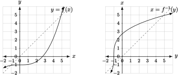

Decompose complicated functions as compositions of simpler functions by displaying the defining algebraic expression as a sequence of steps.
Find the inverse of a function using a sequence of inverse operations and by using algebra.
Graph an inverse function given the graph of a function.
On many occasions we have broken down algebraic expressions as a sequence of steps, often determined by order of operations. Now that we have the concept of a function, we may view this breaking down in terms of function composition or decomposition. Simply put, we may view each step in a sequence of operations defining a function as a function in its own right. For instance, consider the function \(h\) defined by the algebraic expression in 2.1.1. This function is
\begin{equation*}
y = h(x) = (3x+1)^2-2.
\end{equation*}
When we broke down that expression, we noted that it takes \(x\) and does the following:
S1:
multiplies \(x\) by \(3\text{,}\)
S2:
adds one to S1
S3:
squares S2, and finally
S4:
subtracts two from S3,
For each \(x\text{,}\) this process produces an output \(y\text{.}\) Now, we can think about this as two processes, one that does the first two steps S1 and S2, and one that does the last two steps S3 and S4. For the first two steps, we can use the function
\begin{equation*}
u = g(x) = 3x+1.
\end{equation*}
The last two steps then are performed on the output of \(g\) by another function
\begin{equation*}
y = f(u) = u^2-2.
\end{equation*}
Symbolically, we substitute the expression for \(g(x)\) into \(f(u)\) for \(u\) to get our expression for \(h(x)\text{:}\)
\begin{equation*}
y = h(x) = f(g(x)).
\end{equation*}
In general, a new function \(h\) constructed out of a pair of functions \(g\) and \(f\) is called the composition of \(f\) with \(g\text{.}\) The function \(g\) is referred to as theinside function and \(f\) is referred to as the outside function. The inputs of the composition are the inputs of the inside function and the outputs are the outputs of the outside function.
Often we decompose functions by finding inside and outside functions that are easier to work with than the composite. One task that we do this for is finding domains and ranges of composites. For instance, consider the function
\begin{equation*}
y = \sqrt{x^2-1}.
\end{equation*}
Decompose this function into a composition of simpler functions to find its domain and range.
This may be decomposed as \(f(g(x))\) where \(u = g(x) = x^2-1\) and \(y=f(u) = \sqrt{u}\text{.}\) The domain of the composite is those inputs of the inside function that, when the inside function is applied, result in legal inputs of the outside function. The domain of the outside function is \(u\geq 0\text{,}\) hence we must find \(x\)'s such that the output of \(x^2-1\) is non-negative. This occurs only if \(x\geq 1\) or \(x\leq -1\) as numbers between \(-1\) and \(1\) will square to something less than one. Thus the domain is \(x\leq -1\) or \(x\geq 1\text{.}\) The outputs of \(u = x^2-1\) over this domain are all \(u\geq 0\text{,}\) thus the entire range of \(\sqrt{u}\) will be covered. Thus the range of \(y = \sqrt{x^2-1}\) is all \(y\geq 0\text{.}\)
Decompose \(y = h(x) = \dfrac{2}{x^2-9}\) as an inside function and outside function and use that decomposition to find the domain of \(h\) as in the previous example.
One important application of the idea of function composition is that of inverse functions. In short, the inverse of a given function undoes the action of that function, so composition gets you back to where you started. This leads us to the following formal definition:
Definition4.3.4.Inverse Function.
Given a function \(y = f(x)\text{,}\) the inverse function to \(f\) is the function \(x = f^{-1}(y)\) such that
\begin{equation*}
f^{-1}(f(x)) = x\ \text{and}\ f(f^{-1}(y)) = y.
\end{equation*}
The inputs of the inverse function are the outputs of \(f\text{,}\) the outputs of the inverse function are the inputs of \(f\text{,}\) and the two functions undo one another.
Remark4.3.5.
Note that the notation for an inverse function looks like an exponent of \(-1\text{.}\) It is not an exponent! This is just notation for the undoing function. It is kind of confusing and not confusing at the same time. On the one hand, you have to know it's not an exponent. On the other, remember that multiplying by the reciprocal undoes multiplication. This is similar because applying the inverse function to an output of a function undoes the function.
The expression defining this function breaks down as follows:
S1:
Subtract \(4\) from \(x\text{.}\)
S2:
Cube S1.
S3:
Add \(3\) to S2.
The result of this process \(y\text{.}\) Now build the reverse-inverse process to get from \(y\) back to \(x\text{:}\)
S3\(^{-1}\text{:}\)
Subtract \(3\) from \(y\text{.}\)
S2\(^{-1}\text{:}\)
Take the cube root of S3\(^{-1}\).
S1\(^{-1}\text{:}\)
Add \(4\) to S2\(^{-1}\).
That process takes us from \(y\) back to \(x\text{,}\) thus we are able to sequentially build the inverse function
\begin{equation*}
x = f^{-1}(y) = \sqrt[3]{y-3} + 4.
\end{equation*}
In the definition of an inverse function (4.3.4) we said that \(f^{-1}\) is the function that “undoes” \(f\text{.}\) Now let's think about how we can use that idea to solve equations. For instance, take the function
We can read that as asking, “If \(y=17\text{,}\) then what is the \(x\text{?}\)” The answer is simple; if we apply the function that undoes \(f\) to \(17\text{,}\) then we'll find the \(x\). Hence the solution is
then we just plug that number into the inverse function. This idea generalizes to the following:
Key Concept4.3.7.Inverse Function as Equation Solver.
If \(f\) is an invertible function (see 4.3.12), then the solution to the equation
\begin{equation*}
f(x) = b
\end{equation*}
is
\begin{equation*}
x = f^{-1}(b).
\end{equation*}
The characterization of an inverse function as an equation solving function allows us to give an algebraic procedure for finding expressions of inverse functions even when we may not see how to reverse the process of the given function; simply write down the equation defining the function \(y=f(x)\text{,}\) and solve for \(x\) in terms of \(y\text{.}\)
(Solving for \(x\) in terms of \(y\text{.}\)) Note that this function is the left-hand side of the equation we solved in 3.1.6. In that example the right-hand side was \(y=2\text{.}\) Now we can just follow through the same solving procedure, except with a generic \(y\text{:}\)
\begin{align*}
\frac{6x+1}{x-5} \amp = \amp y\\
\amp \updownarrow \amp (\text{multiply both sides by } x-5)\\
6x+1 \amp = \amp y(x-5)\\
\amp \updownarrow \amp (\text{distribute})\\
6x+1 \amp = \amp yx-5y \\
\amp \updownarrow \amp (\text{move (subtract) the } yx \text{ and the }1)\\
6x-yx \amp = \amp -5y-1.\\
\amp \updownarrow \amp (\text{factor out } x \text{ on left})\\
x(6-y) \amp =\amp -5y-1 \\
\amp \updownarrow \amp (\text{divide to solve for } x)\\
x\amp = \amp \frac{-5y-1}{6-y}
\end{align*}
\begin{equation*}
y = f(x) = \frac{4-9x}{7-9x}.
\end{equation*}
You may do this by either method shown in the previous example by noting that
\begin{equation*}
y = f(x) = \frac{4-9x}{7-9x} = 1-\frac{3}{7-9x}.
\end{equation*}
The graph of the inverse to a given function has a particularly nice relationship to the graph of its parent function. To graph the inverse to a function \(y=f(x)\text{,}\) simply take the entire picture of the graph of \(f\text{,}\)including axis labels, and reflect it across the line through the origin making a 45 degree angle with the positive \(x\) axis.

Figure4.3.10.Graph of \(y=f(x)\) and \(x = f^{-1}(y)\text{.}\)
Why does it not make sense to graph \(f\) and \(f^{-1}\) on the same set of axes?
Remark4.3.12.Invertibility of a Function.
So far we have avoided too much discussion of the formal definition of a function given in 4.1.1. The important detail is that a function may only have one input for each output. This makes a function well-defined in the sense that if we put an input in we know what we get out without having to choose one of many possibilities. Because the normal operations of arithmetic are well-defined, whenever we define a function of the form
\begin{equation*}
y = \text{alegbraic expression with }x,
\end{equation*}
we get a well-defined function.
Now we need to refer to that definition more explicitly to say whether a function has an inverse function. To have an inverse function, a given function must have the property that for every output (\(y\)-value) there is only one input (\(x\)-value). Such functions are called one-to-one. If a function is not one-to-one, then the inverse is not a well-defined function. For instance,
\begin{equation*}
y = f(x) = x^2
\end{equation*}
is not invertible. For every output \(y\text{,}\) there would be two possible inputs \(x=\sqrt{y}\) and \(x=-\sqrt{y}\) (this function is two-to-one).